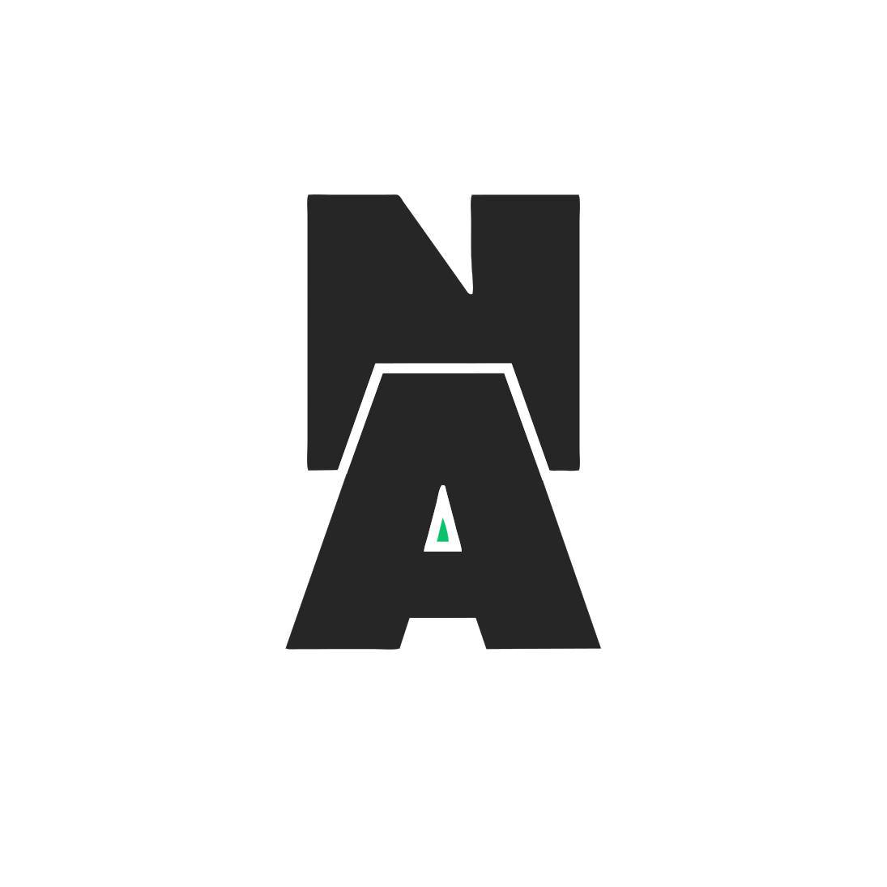
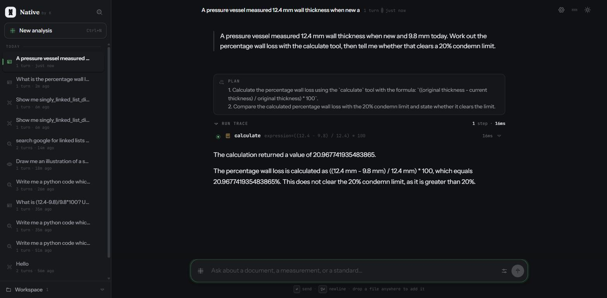

Agent runtime · Open source · Apache 2.0
Native
An agent you run yourself. It reads your documents, executes Python in a network-disabled Docker container, searches a knowledge base that never leaves the machine, and writes the .docx, .xlsx and .pptx files you actually have to hand over — then reopens each one and reports its real contents back from disk.
Every role is a chain, not a choice. When a free tier rate-limits, the run doesn’t stop — it walks down to the next link, and the last link is a model on your own hardware with no quota at all.
Groq→Gemini→OpenRouter→NVIDIA→Ollama · local
22 tools · runs offline · no paid API
Python
LangGraph
FastAPI
Docker sandbox
PP-OCRv4
RAG
Ollama

works with the wifi off